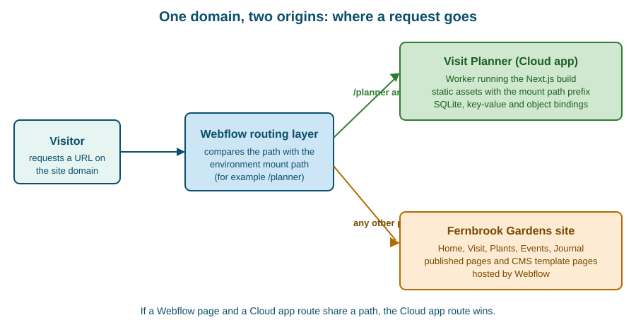

Webflow Cloud
|
This content was generated with the assistance of AI and should be verified against the official documentation before being relied on in production. |
This page describes Webflow Cloud as it was on 2026-10-28, the date on which its facts were checked against the
introduction, getting-started, bring-your-own-app, environments, framework-customization, static-apps, deployments and
limits pages of the Webflow Cloud documentation on developers.webflow.com. Webflow Cloud is a hosting service for
applications, not a feature of the visual builder, so a Developer workspace site is enough to follow every example
here. Which plan a production app needs, and how much storage and how many reads and writes each plan includes, is
decided by the plan tier of the Workspace and site; the tiers are named in
Plans, Workspaces, Seats and Roles and the official pricing
page is linked in the references, but no prices are quoted here. The command-line version used is
@webflow/webflow-cli 2.15.0, which needs Node.js 22.13.0 or later; the CLI is described in
Webflow CLI.
The running example is Fernbrook Gardens, a fictitious botanical garden. Its Webflow site is built visually, but
visitors also want a Visit Planner: a small web application in which they pick plants and garden zones, order the
stops into an itinerary and save it for the day of the visit. That needs server code, a database and sessions, which a
Webflow site cannot provide on its own. The garden’s developer builds Visit Planner as a Next.js app, mounts it at
/planner on the garden’s domain and deploys it with Webflow Cloud. This page explains the platform and creates the
app end to end. The storage that holds itineraries and sessions is explained in
Webflow Cloud: Storage, and environments, deployments, secrets and CI are
explained in Webflow Cloud: Deployments and
Environments.
What Webflow Cloud is and who uses it
Webflow Cloud is a deployment and hosting environment for web applications. The developer keeps the code in a GitHub repository and Webflow Cloud builds and deploys it whenever the connected branch changes. The application runs on Cloudflare Workers, the same edge runtime used by many serverless platforms, which has consequences that run through this page: requests are served by a JavaScript runtime that is Node.js compatible but is not Node.js, execution time and memory are capped per request, and the file system is not a place to keep data.
Webflow Cloud is for several kinds of people:
-
Developers who need server-side logic next to a Webflow site: authenticated areas, dashboards, calculators, personalised pages, form back ends or API proxies that keep a secret out of the browser.
-
Teams that already have a Next.js, Astro or Vite app and would rather host it with the site, under the same domain, than run a separate hosting account.
-
Designers and marketers who benefit indirectly: the app is reached through a link or a path of the site, and the app can even use components exported from the Designer (see DevLink Export).
-
DevOps engineers who automate deployment from the CLI or from GitHub Actions.
It is not a replacement for the Webflow site itself. Pages designed in the Designer, the CMS and Ecommerce stay on Webflow’s own hosting; Webflow Cloud adds a second origin that can sit under the same domain. The wider map of the developer products, and where Cloud fits among them, is in Developer Platform Overview.
Source: Webflow Cloud: Introduction
The building blocks
The documentation describes Webflow Cloud with three nouns, and the rest of the platform is built from them.
| Noun | Meaning |
|---|---|
App |
One application or service: a repository, a framework and the settings Webflow Cloud holds for it. Visit Planner is one app. |
Environment |
A separate version of an app with its own branch, mount path, variables and storage. A garden would typically have
|
Deployment |
One build and release of an environment, started by a push, by the CLI or by the Deploy latest build button, with build logs and a status. |
The storage products that an app can bind to are SQLite, a key-value store and object storage. They are only named here and are covered in Webflow Cloud: Storage.
Source: Webflow Cloud: Introduction
Site-attached and standalone apps
An app is hosted in one of two ways, and the choice is made when the app is created.
| Site-attached app | Standalone app | |
|---|---|---|
URL |
Served under an existing Webflow site, for example |
Served from its own root URL, for example |
How it is chosen |
Choose Existing site in the deploy wizard and enter a mount path such as |
Choose New domain in the deploy wizard; with the CLI, give a Workspace identifier instead of a site identifier. |
Mount path |
Required. It is the base path of the whole app. |
Not applicable in the same sense; the app lives at the root of its own URL. |
Typical use |
An app that must feel like part of the garden’s site: the planner, a members area, a calculator. |
An internal tool, a prototype, an API, or an app that has no relationship with a particular Webflow site. |
A site-attached app shares the domain, so it shares the cookies and the origin of the site, and a visitor never sees a different host name. That is the reason most real apps are site-attached. The cost is the mount path, which changes how URLs inside the app must be written; the rules are in The mount path.
Source: Webflow Cloud: Getting started
Supported frameworks and versions
Webflow Cloud detects the framework from the repository and generates the deployment configuration, so that usually no adapter and no extra configuration file is needed.
| Framework | Supported versions | Notes |
|---|---|---|
Next.js |
15 and later; the starter uses 16 |
Full-stack apps with server-side rendering. Deployed with the OpenNext Cloudflare adapter. If the repository has no
|
Astro |
5 and later; the starter uses 7 |
Content-focused sites that ship little JavaScript. Webflow Cloud reads the Astro version from |
Vite |
6.1 and later |
React, Vue, Svelte or vanilla JavaScript apps. Any app with a |
Static |
Not applicable |
Plain HTML, CSS and JavaScript with no build step; see Static apps. |
Three general requirements apply to every framework app: the code is in a GitHub repository, the runtime is Node.js 22
or later, and the package manager is npm, because only npm is supported. Webflow Cloud also ignores a custom build
script in package.json and runs the framework’s own build, so build steps hidden in a script are not run.
To pin the framework instead of relying on detection, add a webflow.json with a cloud object. The supported values
are nextjs, astro, vite and static; the value for Astro is always astro, never a version-specific name.
{
"cloud": {
"framework": "nextjs"
}
}The documentation publishes starter repositories for each framework in the Webflow-Examples GitHub organisation, each
with a plain branch and a -with-bindings branch that already declares storage. The Next.js 16 and Astro 7 starters
are the usual starting points.
Source: Webflow Cloud: Getting started
What Webflow generates and what it owns
Webflow Cloud is deliberately opinionated: a set of settings belongs to the platform, cannot be overridden and should be left out of the app’s own configuration. Knowing the list explains most "it works locally but not on Cloud" reports.
| Owned by Webflow Cloud | Consequence for the app |
|---|---|
The framework adapter that compiles the app for the Workers runtime |
Do not install or configure an adapter to deploy. Install one only for local previews that match production; if an adapter is declared, Webflow Cloud uses it. |
The base path and the asset prefix, taken from the environment’s mount path |
Leave |
Asset handling and image optimisation |
Local images used through the framework’s image component are optimised automatically and cached by the CDN. |
Node.js API compatibility |
|
Observability, such as logging and metrics |
Logs are available per deployment and per environment; see Webflow Cloud: Deployments and Environments. |
Storage resource identifiers |
Declare bindings in |
Two points deserve emphasis. First, a missing framework configuration file does not stop a build: a Next.js app with
no open-next.config.ts still deploys. Second, the platform adds content to the build, not to the pages of the Webflow
site; the Webflow-designed pages of the garden are untouched, and Webflow Cloud does not inject scripts into them.
Source: Webflow Cloud: Configuration
The mount path
The mount path is the URL prefix under which a site-attached environment is served, such as /planner. It is set when
the environment is created, it must be unique among all the environments of an app, and it routes traffic to the right
environment. Changing it requires a redeploy so that code references to the mount path are updated too. Because each
environment has its own mount path, one domain can host several environments side by side, for example /planner for
production and /planner-staging for a staging branch; anyone with the URL can open the staging version, so staging
paths are not private.
Webflow Cloud applies the mount path as the framework’s base path and asset prefix at build time. The developer does not write it into the configuration, and the app should read it at run time instead of hard-coding it.
Assets
| Situation | What to do |
|---|---|
Next.js |
Nothing: the prefix is applied and local images are optimised. |
Next.js plain |
Prepend the base path, read from |
Astro assets |
Build the path from |
Reading the base path from the framework configuration |
Do not import |
// app/components/ZoneBadge.tsx
const basePath = process.env.NEXT_PUBLIC_BASE_PATH ?? '';
export function ZoneBadge({ zone }: { zone: string }) {
return (
<span className="zone-badge">
<img src={`${basePath}/icons/zone.svg`} alt="" width={16} height={16} />
{zone}
</span>
);
}For Astro, the same idea uses the assets prefix and falls back to the base URL:
const assetsPrefix = import.meta.env.ASSETS_PREFIX || import.meta.env.BASE_URL || '';
const iconUrl = `${assetsPrefix}/icons/zone.svg`;Fetches and links
Framework helpers apply the base path for you: in Next.js Link, useRouter(), redirect() and next/image, and in
Astro page links and astro:assets images. Hand-written URLs do not get the prefix. A manual fetch() to the app’s
own API, a plain <link> or <script> tag, and a client-side request to an API route all need it added by hand.
const baseUrl = process.env.NEXT_PUBLIC_BASE_PATH ?? '';
const response = await fetch(`${baseUrl}/api/itineraries`);Source: Webflow Cloud: Configuration
In Astro, prefix client-side requests with import.meta.env.BASE_URL. Use the platform fetch API throughout; avoid
third-party HTTP clients such as axios on the edge runtime.
NEXT_PUBLIC_BASE_PATH is a public environment variable: Next.js inlines every variable whose name starts with
NEXT_PUBLIC_ into the JavaScript sent to the browser, and Astro does the same for PUBLIC_ variables. A value
declared as such must never be marked secret, because a secret is redacted from logs but a public variable is shipped
to every visitor.
Pitfalls of the mount path
-
Absolute URLs without the prefix such as
/styles.cssor/icons/zone.svgresolve at the root of the domain, where the Webflow site answers, and return a 404 or a Webflow page. This is the most common failure. -
Double prefixing. Adding the base path to a helper that already adds it produces
/planner/planner/.... Use the prefix only for hand-written URLs. -
Authentication callbacks. A sign-in provider’s callback URL must include the mount path, and the code must not repeat it.
-
Local development serves from
/, not from the mount path, so a missing prefix is invisible until the first deployment. A preview that matches production needs the framework’s Cloudflare adapter andwranglerinstalled locally. -
A changed mount path needs a redeploy, otherwise the built code still contains the old prefix.
Route precedence over Webflow pages
On a site-attached app two origins answer on one domain, and the question of who wins when both define the same path
has a definite answer: the Webflow Cloud application route takes precedence over the Webflow site. If Visit Planner is
mounted at /planner and the Designer also contains a page whose slug is planner, the app’s route is served and the
page becomes unreachable. The documentation gives the same rule with a /users example.

The practical recommendations that follow are to avoid mount paths that collide with existing or planned pages, to
choose a distinctive prefix such as /app or /planner rather than a generic word, and to document the app’s routes
for the people who edit the site. Anyone who later creates a Webflow page under the same prefix will otherwise be
puzzled by a page that publishes successfully but never appears. Redirect rules and site migrations that also touch
paths are explained in Redirects and Site Migration.
Deleting an environment does not by itself remove it from the domain, and deleting an environment does not delete its GitHub branch (nor the reverse). Publishing the Webflow site does not trigger an app deployment, and deploying the app does not publish the site: the two are decoupled, so a site-attached app can be deployed on a day when the site is unchanged.
Source: Webflow Cloud: Environments
Static apps
A static app is the simplest Cloud app: plain HTML, CSS and JavaScript with no build step and no server code. It is
published as assets only. Static mode applies when webflow.json sets the framework to static, or when no framework
is set and the repository passes all the inference rules: no package.json at the root or in any nested folder, no
other framework in webflow.json, a regular index.html file at the root, and no build or runtime indicators in the
published tree. A repository that mixes a root index.html with framework files fails inference, and the deploy error
lists the conflicting files.
{
"cloud": {
"framework": "static"
}
}Source: Webflow Cloud: Static apps
Static apps have specific rules:
-
Files are served exactly as committed; Webflow Cloud does not rewrite paths in HTML, CSS or JavaScript, so under a mount path such as
/planneran absolute/styles.cssresolves at the domain root and can return a 404. Use relative paths such as./styles.css, or prefix paths with the mount path. -
There is no worker: bindings and worker settings in
wrangler.jsonare accepted but ignored, and environment variables have no effect. -
_headersand_redirectsfiles are moved to the asset root, the only place Cloudflare reads them. The behaviour of_redirectsrule paths under a non-root mount path should be tested in a non-production environment first. -
Everything in the checkout is published unless excluded. Dot files and dot directories (except
.well-known),node_modules,package.json, lock files,webflow.json,wrangler.*, Terraform state and variable files,auth.jsonand private key files are not published, and symlinks are never followed. Forcingstaticon a repository that also contains a framework app can expose its source files, so a static app lives in its own repository. -
If the dashboard warns about a missing root
package.jsonon a static repository, deploy once with the CLI (webflow cloud deploy) first.
Source: Webflow Cloud: Static apps
Fernbrook Gardens uses a static app for its printable Garden map microsite, which has no data and no server logic, and a Next.js app for Visit Planner, which has both.
The edge runtime
Server code on Webflow Cloud runs at the edge, in a Worker. API routes must say so explicitly. In Next.js, each API
route exports the runtime constant; in Astro, each API route exports a config object.
// Next.js route handler
export const runtime = 'edge';// Astro API route
export const config = {
runtime: "edge",
};Other framework-specific constraints from the framework-customization page:
-
Next.js: middleware that uses the Node.js runtime is not supported, only Edge middleware; incremental static regeneration and on-demand revalidation are experimental; the
use cachedirective is not supported. -
Astro: sessions need a key-value binding named exactly
SESSION; without it the first session read or write fails with an[unstorage] [cloudflare] Invalid binding 'SESSION'error. Tailwind CSS is added with the@tailwindcss/viteplugin, because@astrojs/tailwindis deprecated and unsupported. -
Vite: a worker is needed only for server-side routes; without a
src/worker.ts, Webflow Cloud generates an asset-only worker. Never prefix a secret withVITE_, because those values are embedded in client bundles.
/// <reference types="@cloudflare/workers-types" />
interface Env {
ASSETS: Fetcher;
API_TOKEN: string; // Set in your Webflow Cloud environment variables
}
export default {
async fetch(request: Request, env: Env): Promise<Response> {
const url = new URL(request.url);
if (url.pathname.endsWith('/api/hello')) {
return Response.json({ message: 'Hello from the edge!' });
}
return env.ASSETS.fetch(request);
},
} satisfies ExportedHandler<Env>;Caching and the Cache-Control override
Webflow Cloud sits between the visitor and the app, and it applies some header rules of its own. They are the reason that cache tuning, which is routine on a conventional host, does not work here.
| Header | Behaviour on Webflow Cloud |
|---|---|
Response |
Always replaced with |
Request |
Stripped before it reaches the app. |
Response |
Removed from responses. |
Response |
Removed from responses. |
|
Removed from the |
HSTS headers |
Conditionally added by Webflow. |
The consequence, in the documentation’s words, is that once content is cached the app cannot control caching through
standard HTTP headers, and traditional cache invalidation does not work. An app that depends on s-maxage,
stale-while-revalidate or a purge API will behave differently here than on a host that honours them. The design
answer is to treat Webflow Cloud’s caching as a fixed property: make the response correct without caching assumptions,
put volatile data behind API calls that return fresh JSON, and use the platform’s own asset caching, which is why the
prefix rules in Assets matter (an asset URL that carries the prefix is cached on the CDN).
Source: Webflow Cloud: Limits
Runtime limits
The limits apply per environment and per request; a request over the size limits is rejected with a 413 error.
| Limit | Value |
|---|---|
CPU time per request |
30 seconds |
Memory per worker instance |
128 MB |
Cold start (startup time) |
400 ms |
Worker bundle size per deployment |
10 MB |
Build output per deployment (compressed, worker plus static assets) |
100 MB; larger builds fail during the build phase |
Request timeout |
20 seconds |
Request body |
100 MB |
Request and response headers |
32 KB in total, 16 KB per header |
Response body |
Unlimited |
URL size |
16 KB |
Simultaneous outgoing requests |
6 |
Subrequests per request |
1,000 |
Environment variables per environment |
100 |
Environments per app |
10 |
Bindings per app |
5,000 |
Asset sizes |
Images 20 MB, videos 1 GB, 3D models 500 MB, other static files 20 MB |
Source: Webflow Cloud: Limits
The two limits that most often matter in practice are the 10 MB worker bundle and the six simultaneous outgoing requests. A server-rendered Next.js app that imports a large library into a route handler can exceed the bundle limit, and a page that fans out into dozens of calls to the Data API queues behind the six-connection cap. The first is solved by moving heavy code to the browser or to a lighter library, the second by batching and caching reads. Storage-specific limits, which vary with the plan, are in Webflow Cloud: Storage.
Node.js compatibility
Webflow Cloud treats Node.js API compatibility as a platform-provided setting, so the app does not configure it. The underlying runtime is Cloudflare Workers, whose Node.js support has these properties:
-
Many Node.js modules are implemented natively, among them
Buffer,crypto,events,http,path, streams, timers,urlandzlib. -
Some are partially supported (
console,dns,module,os, performance hooks, the test runner and TLS). -
Wrangler injects polyfills for APIs that are not yet native; calling such a method may do nothing or throw a "not implemented yet" error.
-
Some modules can be imported but do not work:
node:vm,node:child_processandnode:worker_threadsexist so that packages which probe for them can load. -
A package that needs the file system, a child process or a long-lived TCP connection is not a good fit. A package that only needs web-standard APIs and the supported Node.js modules is.
The compatibility flag is controlled by the compatibility_date of the Worker configuration. For a date of 2026-08-04
or later the Node.js compatibility flags are enabled by default; for dates from 2024-09-23 to 2026-08-03 the
nodejs_compat flag has to be added to compatibility_flags. Because Webflow Cloud owns this setting for deployed
apps, the date matters mainly for local previews that run through wrangler.
A practical rule is to prefer web-standard APIs (fetch, Request, Response, URL, Web Crypto) in new code, and to
test any dependency with a real deployment to a staging environment rather than assuming that "it runs in Node" means
"it runs on Workers".
Creating Visit Planner end to end
The following steps build Visit Planner, mounted at /planner on a Fernbrook Gardens Developer workspace site.
Step 1: prepare the accounts and the tools
-
A Webflow Workspace with a site (the Developer workspace site
fernbrook-gardensis enough) and a GitHub account. -
Node.js 22.13.0 or later and npm.
-
The CLI:
npm install -g @webflow/webflow-cli@2.15.0. -
An empty GitHub repository named
visit-planner.
Step 2: scaffold the Next.js app
The starter repository is the quickest start. Cloning it and renaming gives a working app with a Webflow-compatible
structure; alternatively the wizard clones it for the developer. The choices of the wizard at
https://webflow.com/dashboard/cloud/deploy are:
-
Click Create app (or Deploy app in an empty Workspace).
-
Click Login to GitHub, authorise Webflow Cloud and install the Webflow Cloud GitHub App for the account or organisation that will own the repository.
-
Open Clone a starter template and choose the Next.js template.
-
Enter the app name (
visit-planner), choose the Workspace and the GitHub account. -
Choose Existing site and enter the mount path
/planner. -
Click Deploy. If GitHub asks for repository permissions, approve and retry.
Later pushes to the deployed branch start new deployments automatically.
Source: Webflow Cloud: Getting started
The same result is available from the terminal for a repository that already exists, which is the route used for bring-your-own apps:
npm run dev # run locally first; the dev server serves from /
webflow auth login # saves a token to .env
webflow cloud deploy # first run: choose site-attached and enter /plannerIn a non-interactive job the same deployment is webflow cloud deploy --no-input with a site identifier (or a
Workspace identifier for a standalone app), as described in Webflow CLI.
Step 3: the project files
The app needs a package.json with the framework dependencies, a webflow.json that pins the framework, and a
wrangler.json only if it uses storage. Webflow Cloud supplies the adapter and ignores a custom build script, so the
scripts are the framework’s own.
{
"name": "visit-planner",
"version": "1.0.0",
"private": true,
"scripts": {
"dev": "next dev",
"build": "next build",
"start": "next start"
},
"dependencies": {
"next": "16.4.3",
"react": "19.3.1",
"react-dom": "19.3.1"
},
"devDependencies": {
"@types/node": "24.0.0",
"@types/react": "19.3.0",
"typescript": "7.0.2"
}
}Source: Webflow Cloud: Getting started
{
"cloud": {
"framework": "nextjs"
}
}The next.config.ts file contains no basePath and no assetPrefix; Webflow Cloud sets them at build time, and any
committed values would be overwritten:
import type { NextConfig } from 'next';
const nextConfig: NextConfig = {
// basePath and assetPrefix are intentionally absent: Webflow Cloud sets them from the mount path.
reactStrictMode: true,
};
export default nextConfig;Step 4: environment variables
The only variable the app needs on day one is the public base path, so that hand-written URLs can carry the mount path.
It is created in the environment’s variable settings in the Dashboard (or with the CLI env-vars commands) and is
public by design. In local development it can stay empty because the dev server serves from /.
# .env.local (local development only)
NEXT_PUBLIC_BASE_PATH=On the deployed environment NEXT_PUBLIC_BASE_PATH is set to /planner. A secret, such as the key a later version uses
to call the Data API for plant data, is added as a secret variable, never with a NEXT_PUBLIC_ name; the full variable
and secret workflow is in
Webflow Cloud: Deployments and Environments.
Step 5: the pages and the API
The home page lists the stops of an itinerary and uses Link for navigation, which applies the mount path for free.
// app/page.tsx
import Link from 'next/link';
import { ItineraryList } from './components/ItineraryList';
export default function Home() {
return (
<main>
<h1>Plan your visit to Fernbrook Gardens</h1>
<p>Pick plants and zones, order the stops and save your route for the day.</p>
<ItineraryList />
<Link href="/about">How the planner works</Link>
</main>
);
}The list is a client component that reads saved itineraries from the app’s own API. Because it uses fetch with a
hand-written path, it prefixes the base path.
// app/components/ItineraryList.tsx
'use client';
import { useEffect, useState } from 'react';
type Stop = { id: string; label: string; zone: string };
const basePath = process.env.NEXT_PUBLIC_BASE_PATH ?? '';
export function ItineraryList() {
const [stops, setStops] = useState<Stop[]>([]);
useEffect(() => {
fetch(`${basePath}/api/itineraries`)
.then((response) => response.json())
.then((data: { stops: Stop[] }) => setStops(data.stops));
}, []);
return (
<ol>
{stops.map((stop) => (
<li key={stop.id}>
{stop.label} ({stop.zone})
</li>
))}
</ol>
);
}Source: Webflow Cloud: Configuration
The API route declares the edge runtime. This first version returns fixed Fernbrook data; the storage page replaces the constant with a SQLite query.
// app/api/itineraries/route.ts
export const runtime = 'edge';
const sampleStops = [
{ id: 'p-001', label: 'Japanese maple', zone: 'Woodland walk' },
{ id: 'p-002', label: 'Lavender border', zone: 'Mediterranean terrace' },
{ id: 'p-003', label: 'Giant water lily', zone: 'Glasshouse' },
];
export async function GET() {
return Response.json({ stops: sampleStops });
}Step 6: deploy, publish and test
Pushing to the connected branch starts a deployment, which can take up to two minutes. The deployment clones the repository, detects the framework, validates support, installs dependencies, generates the platform configuration, builds the app and deploys the output; the build logs record each step and redact secrets. If a build fails, the environment keeps serving the last successful deployment, so there is no downtime.
For a site-attached app the Webflow site is then published, so that the mount path is routed on the site domain, and the result is checked at the mount path:
curl -i https://www.fernbrook.example/planner/api/itinerariesThe response must be a 200 with the sample JSON. A Cache-Control: private, no-cache header on it is expected, as
explained in Caching and the Cache-Control override.
Step 7: link the app from the site
In the Designer, the Visit page gets a button whose link points to /planner. Because the path belongs to the Cloud
app, the link is a normal internal URL; no custom code is needed in the site. The visitor moves between the two origins
without noticing, because they share the domain.
<a class="button" href="/planner">Plan your visit</a>Source: Webflow Cloud: Environments
Step 8: extend it
Visit Planner grows in three directions, each with its own page: storing itineraries in SQLite and sessions in the
key-value store (Webflow Cloud: Storage), adding a staging environment
and a GitHub Actions deployment (Webflow Cloud:
Deployments and Environments), and using PlantCard exported from the Designer so that the app looks exactly like the
site (DevLink Export). The planner may also read the garden’s plants from the CMS
through the Data API, with the token stored as a secret (Data API: CMS).
Local development and typed bindings
The framework dev servers (next dev, astro dev) serve from /, not from the mount path, and do not connect storage
bindings. To reproduce production behaviour locally, install the framework’s Cloudflare adapter (@opennextjs/cloudflare
for Next.js, @astrojs/cloudflare for Astro) and wrangler yourself; Webflow Cloud uses a declared adapter. To get
typed bindings in the editor, run npx wrangler types. For Astro, variables read through locals.runtime.env come from
a dev.vars file in the app root, written in .env format.
npm install --save-dev @opennextjs/cloudflare wrangler
npx wrangler typesTroubleshooting
| Symptom | Check |
|---|---|
404 on the mount path |
The latest deployment succeeded; for a site-attached app the site has been published, the mount path is right, and the environment exists. |
Pushes do not trigger a deployment |
The Webflow Cloud GitHub App has access to the repository. |
Images, CSS or API calls fail only on Cloud |
Every hand-written URL carries the base path; no helper adds it twice. |
Sign-in redirects fail |
The callback URL contains the mount path, and the code does not repeat it. |
The build fails |
The build log for the Node.js version, missing environment variables, an unsupported framework version or a custom build script. |
A Webflow page disappeared |
A Cloud route uses the same path, and Cloud routes take precedence. |
Headers set by the app are ignored |
The header is one of those replaced or stripped by the platform. |
Security and privacy
-
Secrets stay on the server. Secret variables are available at build time and at run time and are redacted from build logs, but
NEXT_PUBLIC_andPUBLIC_variables are shipped to browsers. Never prefix a token, an API key or a database credential with those names, and never withVITE_. -
Staging is reachable. Anyone with the URL of a staging mount path can open it, so staging must not hold real visitor data.
-
Authentication cookies are shared with the site. A site-attached app shares the domain with the Webflow site, so cookie names should be distinctive and the cookies should be marked
SecureandHttpOnly. -
Repository permissions. The Webflow Cloud GitHub App needs access to the repository it deploys; grant it to the repositories that need it, not to the whole organisation.
-
Static apps publish the checkout. Keep secrets, key files and local state out of a static repository; the exclusion list is a safety net, not a design.
When Webflow Cloud appeared and how it changes
Webflow Cloud began as a way to host Next.js and Astro apps next to a Webflow site and has since grown to cover Vite
apps, static apps and starters for several frameworks, with Next.js 16 and Astro 7 as the current starters on the check
date. The CLI side of the product moved from the cloud commands to an apps family on the next release channel, and
the older commands remain as deprecated aliases; the dated history is kept in
Product Changes and Deprecations. Because the product moves
quickly, supported framework versions and limits should be re-checked against the Limits and Bring your own app pages
before a production launch.
Source: Webflow Cloud: Introduction
Choosing between Webflow Cloud and the alternatives
| Need | Choice |
|---|---|
A visual site with a CMS and no custom server logic |
Stay on Webflow hosting; no app is required. |
Server logic or data next to a Webflow site, on the same domain |
A site-attached Webflow Cloud app, as in this page. |
A custom front end that reads Webflow content through an API |
A headless app; see Content Delivery API and Headless. It can be hosted on Webflow Cloud or elsewhere. |
A reverse proxy in front of Webflow with custom routing |
|
A tool that edits the Designer or the site from inside Webflow |
A Designer Extension or a hybrid app; see Designer Extensions and the Designer API and Hybrid Apps. |